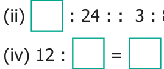

Example 3.8
Pari wants to buy 5 tennis balls from a sports shop. If a dozen balls cost ₹180, how much should Pari pay to buy 5 balls?
Solution
By unitary method, we can solve this as follows :
Cost of a dozen balls = ₹180
Cost of 12 balls = ₹180
Cost of 1 ball \(= \frac{180}{12} =\) ₹15
Cost of 5 balls \(= 5 \times 15 =\) ₹75
Hence, Pari has to pay ₹75 for 5 balls.
Example 3.9
A heater uses 3 units of electricity in 40 minutes. How many units does it consume in 2 hours?
Solution
In 40 minutes, electricity used = 3 units.
In 1 minute, electricity used \(= \frac{3}{40}\) units.
In 120 minutes (2 hours), electricity used \(= \frac{3}{40} \times 120 = 9\) units.
Thus, the heater consumed 9 units of electricity in 2 hours.
- Fill in the boxes.
- 3 : 5 : : : 20

- 5 : : : 10 : 8 : : 15 : : \(4 = 8\) : 16
- Say True or False.
- 7 Persons is to 49 Persons as 11 kg is to 88 kg
- 10 books is to 15 books as 3 books is to 15 books
- If the weight of 40 books is 8 kg, then the weight of 15 books is 3 kg.
- A car travels 90 km in 3 hours with constant speed. It will travel 140 km in 5 hours at the same speed.
- Fill in the blanks.
- If the cost of 3 pens is ₹18, then the cost of 5 pens is __________ .
- If Karkuzhali earns ₹1800 in 15 days, then she earns ₹3000 in __________ days.
- Find whether 12, 24, 18, 36 are in order that can be expressed as two ratios that are in proportion.
- Write the mean and extreme terms in the following ratios and check whether they are in proportion.
- 78 litre is to 130 litre and 12 bottles is to 20 bottles
- 400 gm is to 50 gm and 25 rupees is to 625 rupees
- The America's famous Golden Gate bridge is 6480 ft long with 756 ft tall towers. A model of this bridge exhibited in a fair is 60 ft long with 7 ft tall towers. Is the model, in proportion to the original bridge?
- If a person reads 20 pages of a book in 2 hours, how many pages will he read in 8 hours at the same speed?
- Cholan walks 6 km in 1 hour at constant speed. Find the distance covered by him in 20 minutes at the same speed.
- The number of correct answers given by Kaarmugilan and Kavitha in a quiz competition are in the ratio 10 : 11. If they had scored a total of 84 points in the competition, then how many points did Kavitha get?
- Karmegan made 54 runs in 9 overs and Asif made 77 runs in 11 overs. Whose run rate is better? (run rate = ratio of runs to overs)
- You purchase 6 apples for ₹90 and your friend purchases 5 apples for ₹70. Whose purchase is better?
Objective Type Questions
- Which of the following ratios are in proportion?
(a) 3 : 5 , 6 : 11 (b) 2 : 3, 9 : 6 (c) 2 : 5, 10 : 25 (d) 3 : 1, 1 : 3 - If the ratios formed using the numbers 2, 5, x, 20 in the same order are in proportion, then 'x' is
- 50 (b) 4 (c) 10 (d) 8
- If 7 : 5 is in proportion to x : 25, then 'x' is
- 27 (b) 49 (c) 35 (d) 14
- If a wooden doll costs ₹90, then the cost of 3 such dolls is ₹ ___________.
(a) 260 (b) 270 (c) 30 (d) 93 - If a man walks 2 km in 15 minutes, then he will walk _________ km in 45 minutes.
(a) 10 (b) 8 (c) 6 (d) 12